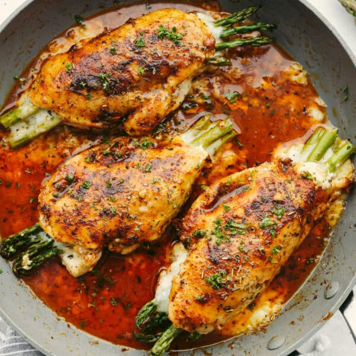

Cheesy Asparagus Stuffed Chicken

Description
This asparagus stuffed chicken is incredibly juicy and tender. Flavored with the most delicious spices and stuffed with the incredibly healthy vegetable, asparagus, you will want to lick your plate clean!
Prep Time: 5 mins | Cook Time: 20 mins | Total Time: 25 mins
Ingredients
- 3 large chicken breasts
- 6 slices mozzarella cheese
- 9 asparagus stalks
- 1 tbsp brown sugar
- 1 tsp chili powder
- 1/2 tsp paprika
- 1 tsp italian seasoning
- 1 tsp garlic powder
- 1/2 tsp salt
- 1/4 tsp pepper
- 2 tbsp olive oil
Steps
- Preheat the oven to 375 degrees. Slice the chicken in half about 3/4 of the way. Open the chicken and pound each side to be about 1/4 inch thick.
- Stuff the chicken breasts each with 2 slices of cheese, and 3 asparagus stalks. Fold the chicken oven and secure it with toothpicks around the edges.
- In a small bowl combine the brown sugar, chili powder, paprika, Italian seasoning, garlic powder, salt, and pepper. Rub generously on each side of the chicken.
- Add the olive oil to a medium-sized skillet and turn to medium-high. Add the chicken and sear on each side for 2-3 minutes. Cover the pan with foil and put it into the oven. Cook for about 15-20 minutes or until the chicken is cooked throughout.